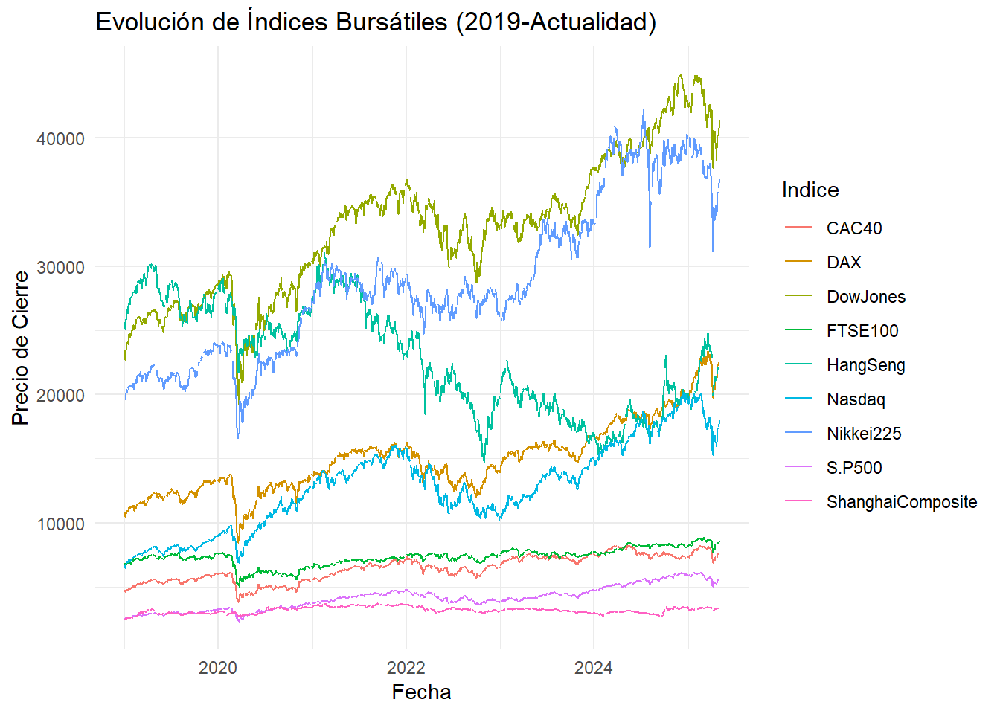
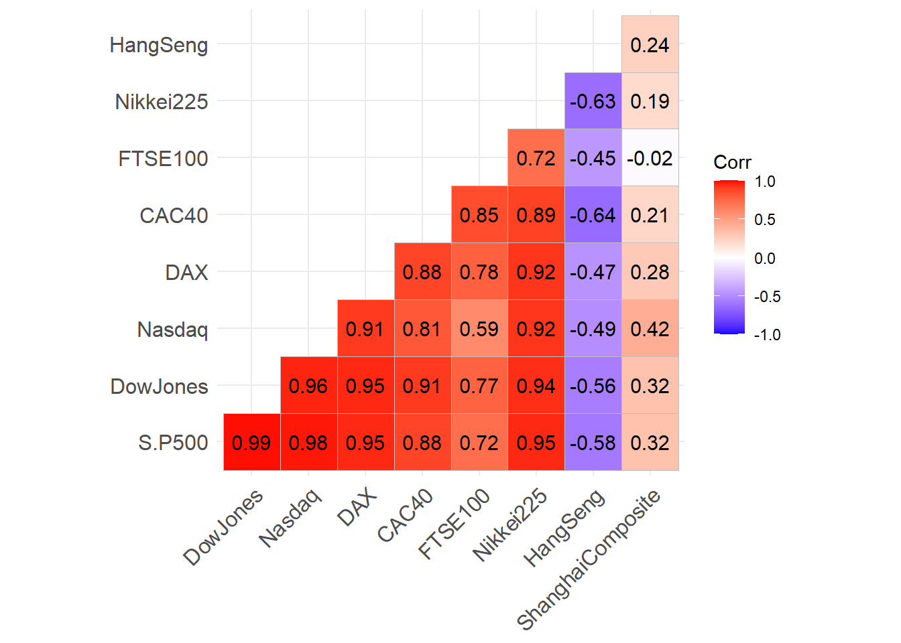
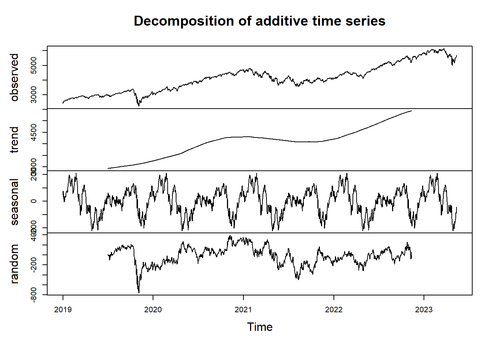

Chapter 3 Desarrollo
# Instalación de paquetes (solo si es necesario)
# install.packages(c("quantmod", "dplyr", "tidyr", "ggplot2", "ggcorrplot"))
# Cargar librerías
library(quantmod)
library(dplyr)
library(tidyr)
library(ggplot2)
library(ggcorrplot)
library(zoo)
# Definición de los índices bursátiles
indices <- c("^GSPC", "^DJI", "^IXIC", "^GDAXI", "^FCHI", "^FTSE", "^N225", "^HSI", "000001.SS")
# Descarga de información desde Yahoo Finance
lista_indices <- lapply(indices, function(x) getSymbols(x, src = "yahoo", from = "2019-01-01", auto.assign = FALSE))
# Asignar nombres a los índices
names(lista_indices) <- c("S&P500", "DowJones", "Nasdaq", "DAX", "CAC40", "FTSE100", "Nikkei225", "HangSeng", "ShanghaiComposite")
# Extracción de los precios de cierre
precios_cierre <- lapply(lista_indices, Cl)
# Unificación de precios de cierre
precios_unidos <- do.call(merge, precios_cierre)
# Asignar nombres de columnas
colnames(precios_unidos) <- names(lista_indices)
# Conversión a data frame
precios_unidos_df <- data.frame(Date = index(precios_unidos), coredata(precios_unidos))
# Transformación para graficación
precios_unidos_df_long <- precios_unidos_df %>%
pivot_longer(-Date, names_to = "Indice", values_to = "Cierre")
# Gráfico de evolución histórica de los índices
ggplot(precios_unidos_df_long, aes(x = Date, y = Cierre, color = Indice)) +
geom_line() +
labs(title = "Evolución de Índices Bursátiles (2019-Actualidad)",
x = "Fecha",
y = "Precio de Cierre") +
theme_minimal()
# Resumen estadístico
summary_stats <- precios_unidos_df_long %>%
group_by(Indice) %>%
summarise(
Min = min(Cierre, na.rm = TRUE),
Q1 = quantile(Cierre, 0.25, na.rm = TRUE),
Media = mean(Cierre, na.rm = TRUE),
Mediana = median(Cierre, na.rm = TRUE),
Q3 = quantile(Cierre, 0.75, na.rm = TRUE),
Max = max(Cierre, na.rm = TRUE),
SD = sd(Cierre, na.rm = TRUE)
)
summary_stats## # A tibble: 9 × 8
## Indice Min Q1 Media Mediana Q3 Max SD
## <chr> <dbl> <dbl> <dbl> <dbl> <dbl> <dbl> <dbl>
## 1 CAC40 3755. 5600. 6454. 6554. 7309. 8240. 1006.
## 2 DAX 8442. 12923. 14980. 14886. 16037. 23419. 2775.
## 3 DowJones 18592. 28195. 32954. 33531. 35730. 45014. 5423.
## 4 FTSE100 4994. 7061. 7333. 7402. 7675. 8871. 683.
## 5 HangSeng 14687. 19360. 22859. 23205. 26467. 31085. 4168.
## 6 Nasdaq 6464. 10476. 12797. 12984. 15048. 20174. 3369.
## 7 Nikkei225 16553. 23424. 28767. 27944. 32704. 42224. 5984.
## 8 S.P500 2237. 3328. 4125. 4130. 4602. 6144. 926.
## 9 ShanghaiComposite 2464. 2982. 3181. 3201. 3365. 3715. 247.# Matriz de correlaciones
correlaciones <- cor(precios_unidos_df[, -1], use = "complete.obs")
correlaciones## S.P500 DowJones Nasdaq DAX CAC40
## S.P500 1.0000000 0.9895502 0.9780775 0.9472545 0.8821475
## DowJones 0.9895502 1.0000000 0.9551491 0.9511941 0.9079328
## Nasdaq 0.9780775 0.9551491 1.0000000 0.9131928 0.8072079
## DAX 0.9472545 0.9511941 0.9131928 1.0000000 0.8837261
## CAC40 0.8821475 0.9079328 0.8072079 0.8837261 1.0000000
## FTSE100 0.7247377 0.7691721 0.5941680 0.7822635 0.8503590
## Nikkei225 0.9521751 0.9437033 0.9242546 0.9161115 0.8903546
## HangSeng -0.5813170 -0.5590163 -0.4859672 -0.4659025 -0.6370419
## ShanghaiComposite 0.3171220 0.3235544 0.4235435 0.2847458 0.2067632
## FTSE100 Nikkei225 HangSeng ShanghaiComposite
## S.P500 0.7247377 0.9521751 -0.5813170 0.3171220
## DowJones 0.7691721 0.9437033 -0.5590163 0.3235544
## Nasdaq 0.5941680 0.9242546 -0.4859672 0.4235435
## DAX 0.7822635 0.9161115 -0.4659025 0.2847458
## CAC40 0.8503590 0.8903546 -0.6370419 0.2067632
## FTSE100 1.0000000 0.7216161 -0.4513646 -0.0209335
## Nikkei225 0.7216161 1.0000000 -0.6328771 0.1895718
## HangSeng -0.4513646 -0.6328771 1.0000000 0.2388812
## ShanghaiComposite -0.0209335 0.1895718 0.2388812 1.0000000# Mapa de calor de correlaciones
ggcorrplot(correlaciones, lab = TRUE, type = "lower", colors = c("blue", "white", "red"))
# --- Corrección del problema de NAs ---
# Filtrar precios sin NA en el S&P500
precios_unidos_df_filtrado <- precios_unidos_df %>%
filter(!is.na(S.P500))
# Crear serie de tiempo
sp500_ts <- ts(precios_unidos_df_filtrado$S.P500,
start = c(2019, 1), frequency = 365)
# Descomposición clásica
descomposicion_sp500 <- decompose(sp500_ts)
# Gráfico de descomposición
plot(descomposicion_sp500)